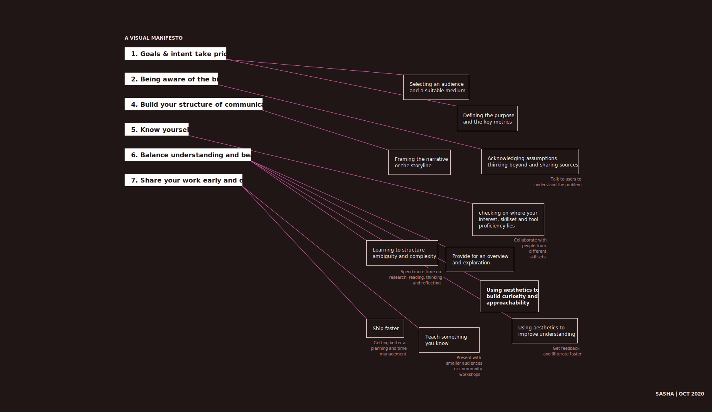

North Star 2020 (WIP)
Throught the discssions in the infoviz class and by reading through the writings of Ben fry, Lisa Charlotte, Georgia Lupi, I tried to create a guide that would help me navigate through information visualization and other design projects.

The 7 points on the right have been placed in the order of the design process. Connections have been made on how and what can be done to improve. The transparent boxes from left the the right showcase areas I currently am spending more time on.
Goals & intent remains priority
The outcomes of a design activity can't be measured if the audience, key metrics and purpose isnt defined. Judging how good a design is might seem tricky when we dont cater to a specific audience. Feedback and other critquing sessions tend to be made over personal bias without a specific audience.
Being aware of ones bias
Getting into a design project with absolute no bias might not be possible. Being open to discssions with people of different opinions might help understand a problem and a situation better.
Build a structure of communication
In the past, I've often not looked at how I want to communicate something to my audience which led to my ideas and opinions being rejected or a disinterest on the listener/viewers end. Building a sutiable structure might help get my point across and keep the audiences interest in.
Know yourself
Recognizing my strengths, interests and weakness would help figuring areas of development. It gives an understanding about areas I would want to collabrate and helps pick my battles wisely.
Balance understanding and beauty
Creating an aesthetic piece without understanding can lead to a waste of time and resources. Knowledge without beauty might not drive curiosity or entice an audience.
Share work early and often
Working in isolation might help getting better at a skill but might not help in solving a problem. Shipping faster and failing faster might possibly help.
PS: This is where I am for now, priorities might change as time goes by. I want to be open to change my perspectives. Thanks for reading! :)